Clutch: Service and Repair
CLUTCH UNIT REMOVAL/INSTALLATIONNote: The clutch release cylinder can be removed from the transmission with the clutch pipe connected.
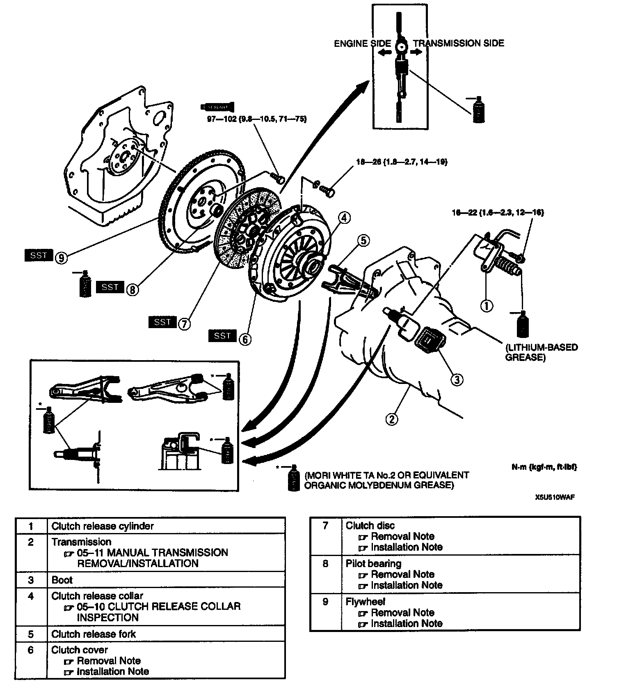
1. Remove in the order indicated in the table.
2. Install in the reverse order of removal.
Clutch Cover And Clutch Disc Removal Note
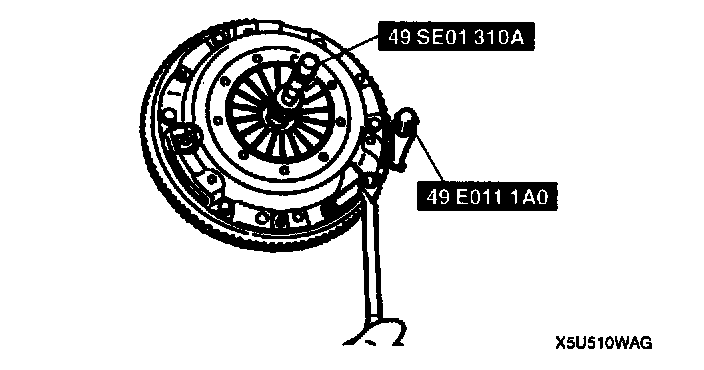
1. Install the SST.
2. Hold the flywheel by using the SST.
3. Loosen each bolt one turn at a time in a crisscross pattern until spring tension is released. Then remove the clutch cover and disc.
Pilot Bearing Removal Note
Note: The pilot bearing does not need to be removed unless you are replacing it.
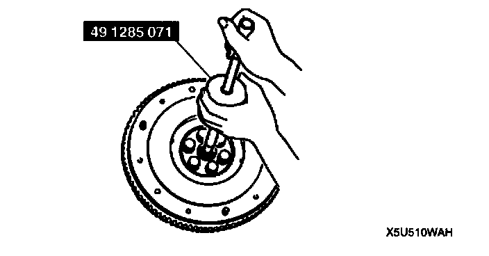
- Remove the pilot bearing by using the SST.
Flywheel Removal Note
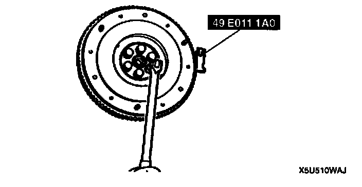
1. Hold the flywheel by using the SST.
2. Remove the flywheel.
3. Inspect for oil leakage from the crankshaft rear oil seal. If there is any such leakage or if the oil seal is damaged, replace the crankshaft oil seal.
Flywheel Installation Note
1. Wipe the bolts clean, then apply sealant to the bolt threads.
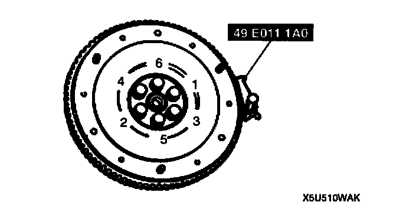
2. Install the flywheel, and secure it by using the SST.
3. Tighten the bolts in the pattern shown.
Tightening torque 97 - 102 Nm (9.8 - 10.5 kgf-cm, 71 - 75 ft. lbs.)
Pilot Bearing Installation Note
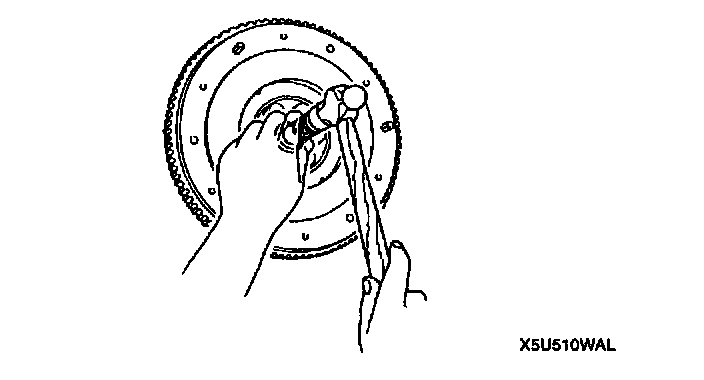
- Install a new pilot bearing by using a suitable pipe.
Depth 0 - 0.4 mm (0 - 0.016 inch)
Clutch Disc Installation Note
1. Clean the clutch disc splines and main drive gear splices, and apply Mori White TA No.2 or equivalent organic molybdenum grease.
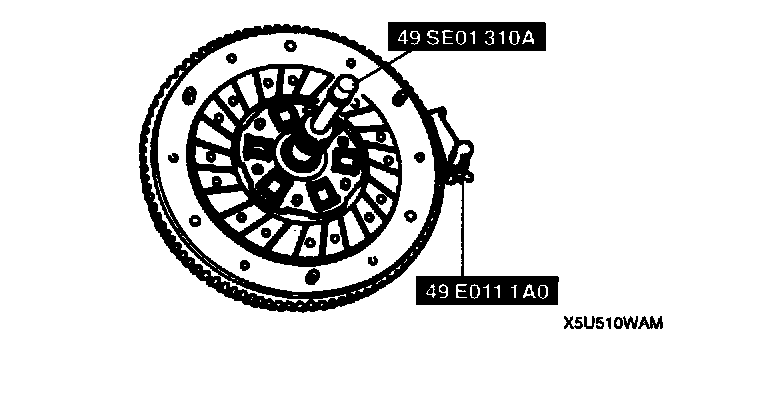
2. Hold the clutch disc in position by using the SST.
Clutch Cover Installation Note
1. Hold the flywheel by using the SST.
2. Align the dowel holes with the flywheel dowels.

3. Tighten the bolts evenly and gradually in the pattern shown.
Tightening torque 18 - 26 Nm (1.8 - 2.7 kgf cm, 14 - 19 ft. lbs.)
Clutch Cover Inspection
1. Inspect the contact surface for scoring, cracks, and burning. Repair or replace as necessary.
2. Remove minor scoring or burning by using emery paper. Repair if scoring or burning is major. Replace if cracked.
3. Inspect the tips of the diaphragm spring for wear and cracks.
4. If there is wear or cracks, replace the clutch cover.
Clutch Disc Inspection
1. Inspect the lining surface for burning and oil contamination. Repair by using sandpaper if the trouble is minor. Replace the clutch disc if it is badly burned or oil soaked.
2. Inspect for loose facing rivets or torsion dampers. Replace the clutch disc if any are loose.
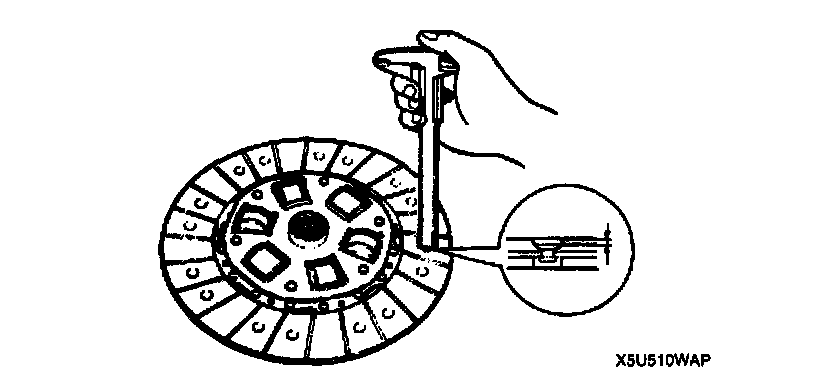
3. Measure the thickness of the lining at a rivet head on both sides by using vernier calipers. Replace the clutch disc if less than minimum.
Minimum thickness 0.3 mm (0.012 inch)
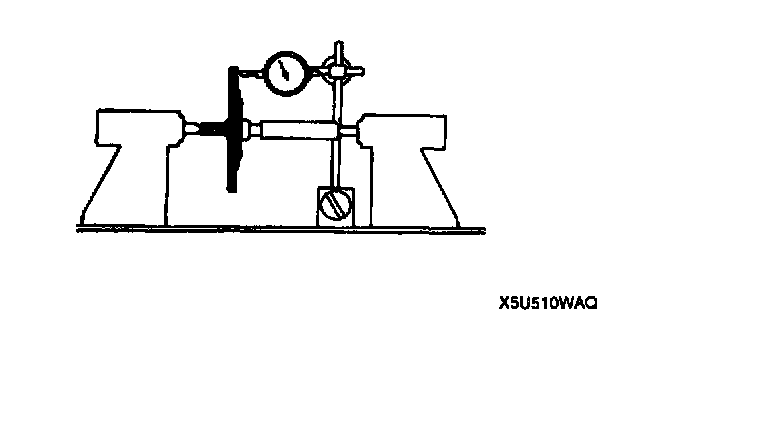
4. Measure the clutch disc runout by using a dial indicator. Replace the clutch disc if runout is excessive.
Maximum runout 0.7 mm (0.028 inch)
Clutch Release Collar Inspection
Caution: Cleaning the clutch release collar with cleaning fluids or a steam cleaner can wash the grease out of the sealed bearing.
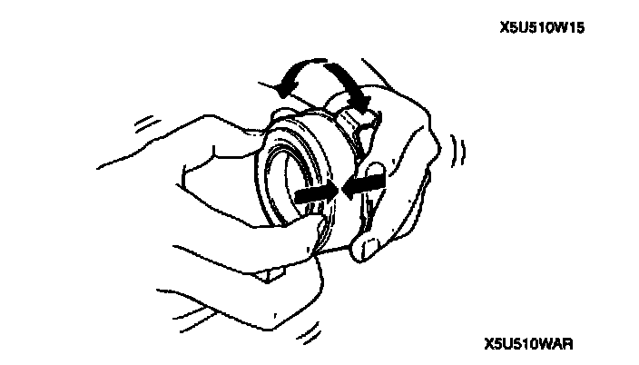
- Turn the collar while applying force in the axial direction. If the collar sticks or has excessive resistance, replace it.
Pilot Bearing Inspection
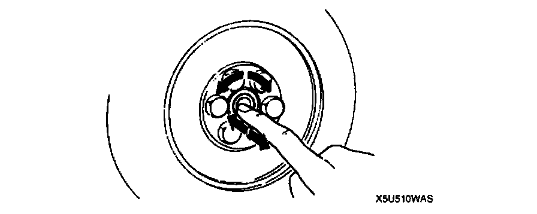
1. Turn the bearing while applying force in the axial direction.
If the bearing sticks or has excessive resistance, replace it.
Flywheel Inspection
1. Inspect the contact surface for scoring, cracks, and burning.
2. Remove minor scoring or burning by using emery paper. Repair if scoring or burning is major. Replace if cracked.
3. Inspect the ring gear teeth for wear or damage.
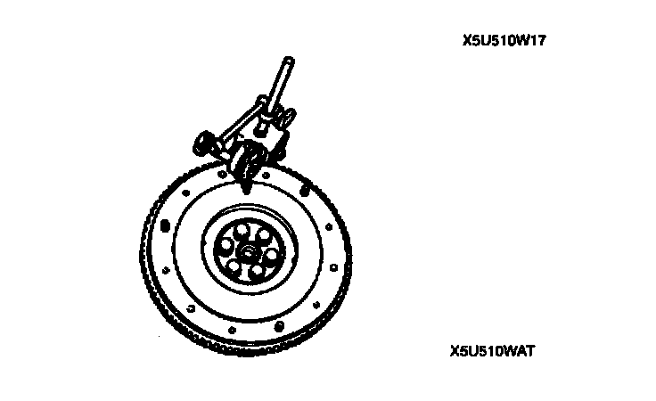
4. Measure the flywheel runout by using a dial indicator. Replace the flywheel if runout is excessive.
Maximum runout 0.2 mm (0.008 inch)